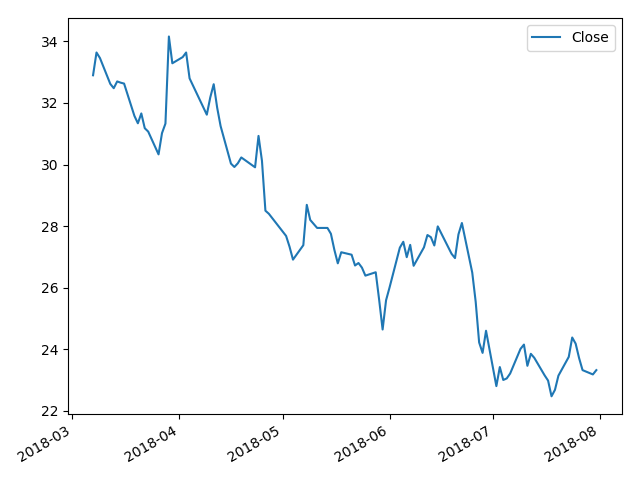
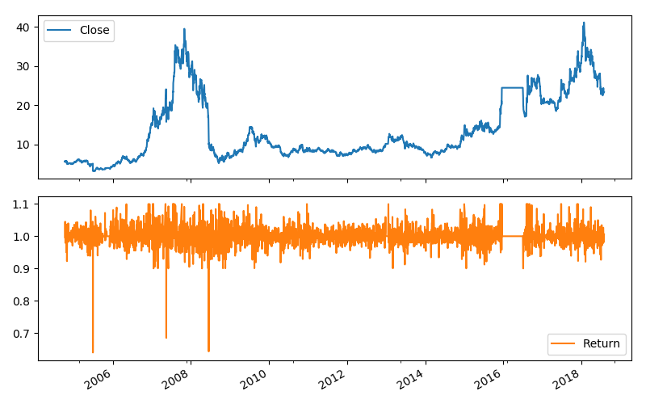
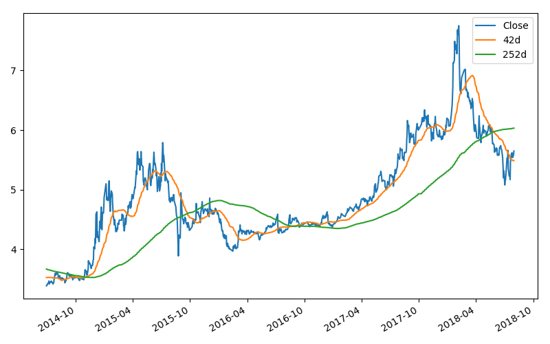
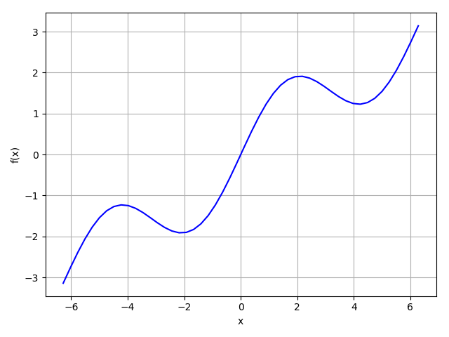

第一章 为什么将Python用于金融
第二章 基础架构和工具
2.1 Python部署
2.1.1 Anaconda
2.1.2 Python Quant Platform
第三章 入门示例
隐含波动率 隐含波动率- MBA智库百科
以某些到期H 的期权1&价倒惟出这些期权的隐含波动率，并绘出阁表一一这是期权交易者和风险管理者每天都要面对的任务。
蒙特卡洛模拟 蒙特卡罗方法- MBA智库百科
通过蒙特卡洛技术，模拟股票指数在一段时间中的变化，对选中的结果进行可视化.并计算欧式期权价值。蒙特卡洛模拟是期权数字化定价的基石，也是涉及风险价值计算或者信用值调整的风险管理℃作的基础。
技术分析 技术分析-维基百科
实施历史时间序列数据的分析，对根据趋势信号的投资策略进行事后验证;专业投资者和有抱负的业余投资者常常进行这类投资分析。
第四章 数据类型和结构
###第五章 数据可视化
第六章 金融时间序列
6.2 金融数据
https://github.com/GuQiangJS/finance-datareader-py
import matplotlib.pyplot as plt |

根据每日收盘价返回对数收益率。
from finance_datareader_py.netease.daily import NetEaseDailyReader |
Close Return |
波动率聚集：波动率不是长期恒定的；既有高波动率时期（正负收益都很高），也有低波动率时期
杠杆效应：一般来说，波动性的股票市场收益是负相关的；当市场下跌的时候波动性升高，反之亦然。
# 收盘价与回报率的对应图表 |

import matplotlib.pyplot as plt |

6.3 回归分析
第七章 输入输出操作
7.3 PyTables的快速I/O
PyTables 是 Python 与 HDF5 数据库/文件标准的结合(https://www.hdfgroup.org/)
PyTables可以把大数据直接写入本地硬盘而并不使用任何数据库管理软件和SQL
7.3.4 内存外计算
延伸阅读
用 pickle 进行的 Pytbon 对象序列化参见如下文梢: http://docs.python.orgl2/library/pickle.html 。
SciPy 网站上提供 NumPy 1/0 能力的概述: http://docs.scipy.orgldoc/numpy/referencc/rolltines.io.htm1 。
- pandas 的I/0 参见在线文档的相应章节: http://pandas.pydata.orglpandas-docs/stab1e/io.html 。
- PyTables 首页提供教程和详细文梢: http://www.pytables.org
第八章 高性能Python
延伸阅读
- numexpr 的细节参见http://github.com/pydata/nwnexpr
- IPytbon.parallel 在这里介绍: http://ipython.org!ipython-doc/stable/parallel
multiprocessing 模块的文稍: https://docs.python.org/2/library/multiprocessing.html
Numba 的信息、可以在http://github.com/numbalnumba 找到
- http://cython.org是Cython 编译器项目的首页
- NumbaPro 的文树可以参见http://docs.continuum.io/nwnbapro
第九章 数学工具
9.1 逼近法
import matplotlib.pyplot as plt |
